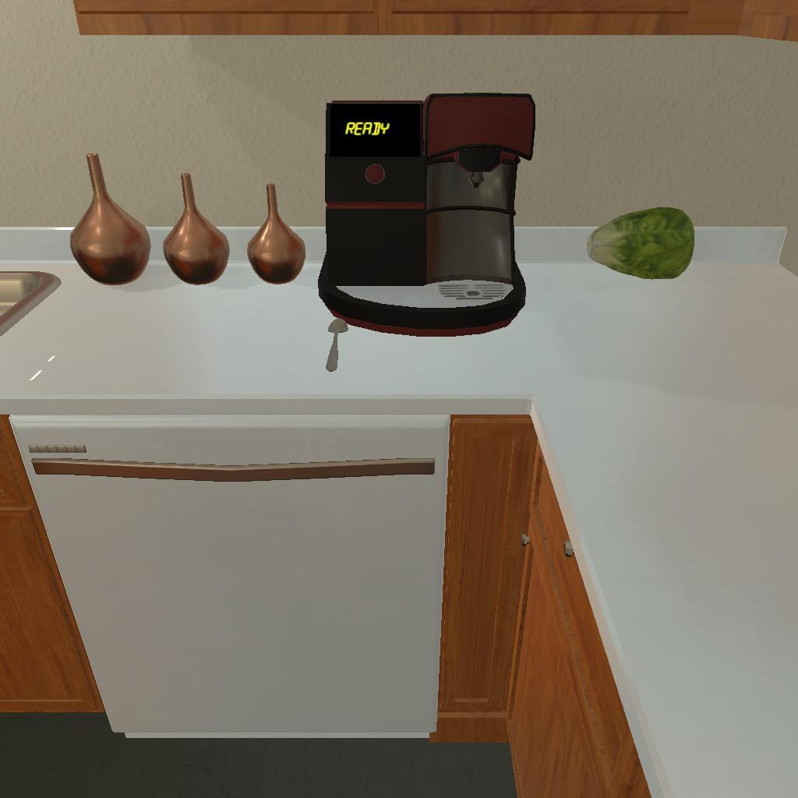

---------------------------------------------------------task: 24---------------------------------------------------------
--------------------------------------------------------------------------------------------------------------------------------------------------------------------
--------------------------------------------------------------------------------------------------------------------------------------------------------------------
Step:--------------------------------------------------------------------------3-------------------------------------------------------------------------------
----------------------------------------
VLM Prompt:
**Task**
Please perform as an embodied AI agent. Our final objective is to heat some tomato and put it in fridge. Below is the plan for completing the task, the current observation, alongside historical data and admissible actions for the next step. Please determine the best action for the next step!
**Plan**
Below is a detailed step-by-step plan to complete the task.
1. Find a tomato.
2. Pick up the tomato.
3. Find a microwave.
4. Heat the tomato with the microwave.
5. Find a fridge.
6. Open the fridge.
7. Place the heated tomato in the fridge.
8. Close the fridge.
**Current Observation**
Displayed is an image capturing the current position of the agent.
**History Information**
Displayed are the previous observations with their corresponding actions.
Current State 1:
1. Place: In front of a sink
2. Step Index in Plan: 1
3. Objects: Sink
4. Action: Go to cabinet 1
Current State 2:
1. Place: Cabinet 1
2. Step Index in Plan: 2
3. Objects: None visible
4. Action: Go to countertop 1
Current State 3:
1. Place: Countertop 1
2. Step Index in Plan: 2
3. Objects: Lettuce
4. Action: Go to microwave 1
**Admissible Actions**
(1): go to cabinet 2
(2): go to cabinet 3
(3): go to cabinet 4
(4): go to cabinet 5
(5): go to microwave 1
(6): go to cabinet 6
(7): go to drawer 1
(8): go to drawer 2
(9): go to drawer 3
(10): go to cabinet 7
(11): go to cabinet 8
(12): go to sink 1
(13): go to sinkbasin 1
(14): go to coffeemachine 1
(15): go to cabinet 9
(16): go to cabinet 10
(17): go to drawer 4
(18): go to cabinet 11
(19): go to stoveburner 1
(20): go to stoveburner 2
(21): go to stoveburner 3
(22): go to stoveburner 4
(23): go to cabinet 12
(24): go to toaster 1
(25): go to drawer 5
(26): go to countertop 2
(27): go to fridge 1
(28): go to cabinet 13
(29): go to cabinet 14
(30): go to diningtable 1
(31): go to garbagecan 1
(32): go to safe 1
(33): take lettuce 1 from countertop 1
(34): take spoon 1 from countertop 1
**Analysis Guideline**
1. Analyze the **History Information** and determine our current step in the plan and our current place.
2. List all visible objects related to the task in the current observation.
3. Analyze the objects in the current observation based on the history and the requirements for the current step, and then determine if we can complete the step with the current observation.
4. Analyze and decide on the most appropriate action to take.
5. Summarize the analysis using the following format: "Analysis: [The summarization of the analysis], The Most Appropriate Action: (i which is the integer.): [Selected action]"
**Notes**
1. We must complete each step of the plan in order and cannot skip steps when the previous ones are not finished.
2. For "Go to" actions listed as "go to xxx [n]", interpret this as there are n distinct actions available: "go to xxx 1", "go to xxx 2", ..., "go to xxx n". Select one specific action from these options instead of using "go to xxx [n]".
3. If receptacles such as drawers, cabinets, and so forth are closed in the current observation, we may try to open them.
4. Pay attention to synonyms and ensure clarity in the terms used.
5. If there is no history available, we are at the first step and the current place is "Unknown".
6. The most appropriate action must be in the **Admissible Actions**, and we cannot generate a new action that is not in the **Admissible Actions**.
**Answer**
Please select the most suitable action by following the **Analysis Guideline**, keeping the above **Notes** in mind.
----------------------------------------
----------------------------------------
VLM Response:
Analysis: According to the History Information, the agent is currently at step 2 in the plan, which is to pick up the tomato. The current observation shows the agent is facing a countertop with a coffee machine and a lettuce, not a tomato. The History Information suggests the agent has already been to cabinet 1 and countertop 1 without finding a tomato. To continue following the plan, the agent must find and pick up a tomato. The current observation does not present a tomato to pick up, so the agent must move to another location to find it.
The Most Appropriate Action: (5): go to microwave 1
This action follows the History Information where the last action was to go to microwave 1, which implies the agent may have had an intention to use the microwave, possibly for heating the tomato once it is found. However, since there's no tomato in the current observation, moving to the microwave could provide a new vantage point to continue the search for a tomato.
----------------------------------------
----------------------------------------
>>> Refine VLM Response and Get Pure Action: go to microwave 1
This action follows the History Information where the last action was to go to microwave 1, which implies the agent may have had an intention to use the microwave, possibly for heating the tomato once it is found
----------------------------------------
-----------------------------------------------------------------
Running time: 26.33746337890625 seconds
Total Money: 11.867649999999996
-----------------------------------------------------------------
-----------------------------------------------------------------
Summarization Prompt:
**Context**
Analysis: According to the History Information, the agent is currently at step 2 in the plan, which is to pick up the tomato. The current observation shows the agent is facing a countertop with a coffee machine and a lettuce, not a tomato. The History Information suggests the agent has already been to cabinet 1 and countertop 1 without finding a tomato. To continue following the plan, the agent must find and pick up a tomato. The current observation does not present a tomato to pick up, so the agent must move to another location to find it.
The Most Appropriate Action: (5): go to microwave 1
This action follows the History Information where the last action was to go to microwave 1, which implies the agent may have had an intention to use the microwave, possibly for heating the tomato once it is found. However, since there's no tomato in the current observation, moving to the microwave could provide a new vantage point to continue the search for a tomato.
**Summary Format**
1. Place: [Specify the current location]
2. Step Index in Plan: [Dispkay the current step number in the plan before taking the current action]
3. Objects: [List the objects relevant to the task]
4. Action: [Describe the most appropriate action without the "(x)" and keep the integer of the object]
Please analyze the **Context** and summarize the analysis using the **Summary Format**.
-----------------------------------------------------------------
-----------------------------------------------------------------
Summarization Response:
1. Place: Countertop with a coffee machine and lettuce
2. Step Index in Plan: 2
3. Objects: Coffee machine, lettuce
4. Action: Go to microwave 1
-----------------------------------------------------------------
-----------------------------------------------------------------
Text Observation:Nothing happens.
-----------------------------------------------------------------
UNSUCCEED